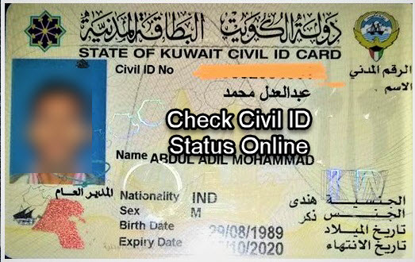

This App provides citizen and residents in the State of Kuwait a digital ID which could be used for the following purposes and more:
The new civil ID card contains a microprocessor that can host a large amount of data. Besides, the computerised card securely stores digital certificates, ... You've visited this page 5 times. Last visit: 2/15/21
May 8, 2021 — Kuwait City: The Public Authority for Civil Information (PACI) announced on Friday that they updated the digital ID application, Kuwait Mobile ...
Nov 18, 2020 — Civil ID Delivery Services Available in PACI Website for 2 KD , if you Civil id Status.
Feb 20, 2021 — Step 1 - Click the link. Step 2 - Enter your Civil ID No and Click Search. PACI Civil ID Delivery Status. Steps to Get Civil ID Delivered to ...